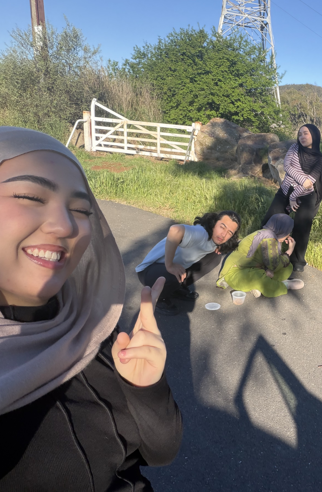
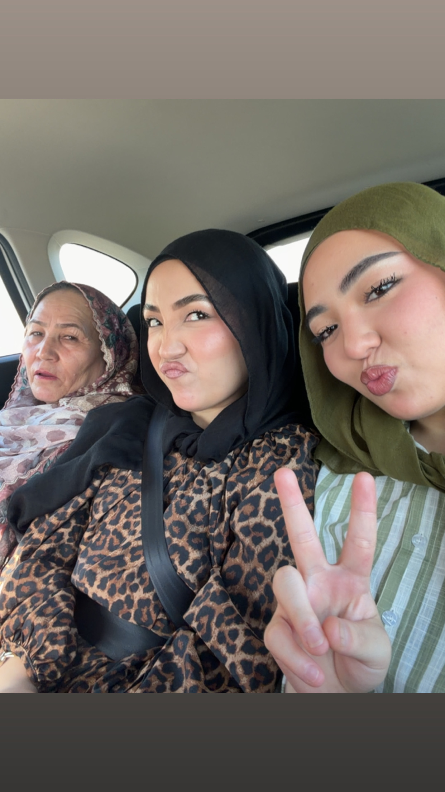
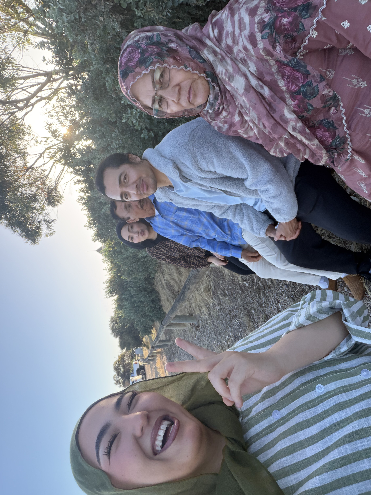

The gang together 😤01 / 05
A cinematic little corner of the internet built from memories, inside jokes, and a suspicious amount of birthday energy.
A cinematic little journey through memories, cousin lore, questionable decisions, and progressively less serious behavior. Keep scrolling. Things get increasingly unprofessional.
Picture frames are treated like objects in a gallery instead of thumbnails in a grid. Real photos can drop in later without changing the layout.



Answer carefully. This extremely scientific family investigation has no correct answer.
Think about it. Then remember that this quiz cannot be trusted.
A question for the ages. The results will be completely made up.
Chapter 05 / The quiet moment
You have reached the final scene. Please remain on this page. Something extremely normal is about to happen.
Sorry I couldn’t give you a real present. This is all I could do. ❤️
The birthday song won’t play now. If you say yes, it’ll start when the final chaos reveal arrives.